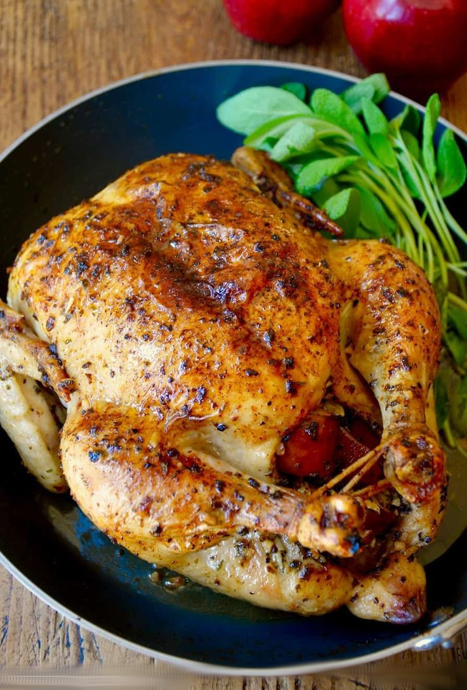

Ingredients
- 1 chicken (approximately 1.5 kg)
- 2 small, sweet sour apples
- 50 g of prunes
- 2 tablespoons brandy
- 2 tablespoons brandy
- 1 lemon
- salt, pepper, sugar
- 50 ml soy sauce
- 1 teaspoon mustard
- 1 tablespoon oil
- 2 cloves garlic
- 1 tablespoon butter
- bunch of herbs (thyme, rosemary, tarragon)
- 6 red sweet sour apples
- lingonberries and cranberries
- sugar
- pepper
Steps for cooking recipe
- Prepare the marinade: mix the soy sauce with mustard, some finely chopped herbs (you can also use dried, a mixture of Mediterranean herbs is good), squeeze the garlic, add half a lemon juice, add sugar and a little pepper, add oil.
- With the prepared marinade, rub the washed and dried chicken from the inside and outside. Put it to marinate for half an hour.
- The apples are cut into cores, each cut into four parts. Heat the butter in a pan and fry the sliced apples lightly. Let it rest
- Add prunes soaked in brandy for a few hours with all the liquid, rub half a lemon peel, squeeze a little lemon juice, mix the remaining chopped herbs, lingonberry, sprinkle with a pinch of salt and pepper, mix everything.
- Fill the chicken belly with the prepared filling.
- The abdomen is tightly fastened with wooden sticks and, in order to hold it firmly, it is additionally tied with string, which is wrapped around the ends of the sticks.
- The chicken legs are tied together with string. Use another string to tie the chicken wings to the body, you can put a slice of apple in armpits.
- Put everything in a pan or mold with a little oil, add a little hot water. Bake at 220 degrees for the first 10 minutes, then reduce the temperature to 180 degrees, occasionally pouring the chicken into the pan with liquid, bake for another 30 minutes.
- In addition. add prepared apples. Use a knife to cut the cores.
- The empty areas of the kernels are filled with lingonberries, pressing them and compacting them. Sprinkle the apples with a little sugar and pepper.
- Once the chicken has been cooked for 40 minutes, place the apples in a pan next to it and bake for another 20-25 minutes.
Return to top
To Main Page